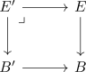
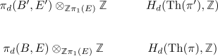

oriented spherical fibration and cohomology
Proposition
Let $\pi: E \rightarrow B$ be a oriented spherical fibration. Then the natural map from sphere to thom space
induces an isomorphism on $H^d(-, \mathbb{Z}/2 \mathbb{Z})$ (cf. singular cohomology)
and on $H^d(-, \mathbb{Z})$.
If $\pi$ is oriented spherical fibration, then
for $k < d$
proof
$d =1$
for $d = 1$ and $\pi$ oriented, then we get $E = B \times S^0$ and hence $\mathrm{Th}(\pi) = S^1 \vee B_+$. Otherwise $E \rightarrow B$ is a $C_2$ galois covering. Hence insert top1 final ex sheet
$d = 2$
the relative Hurewicz theorem shows
by connectivity for $\mathrm{Th}(\pi)$ and universal coefficient theorem for singular homology we get
These maps are natural in the following sense: Given a pullback diagram

we get

if we hvae
This argument gives $S^d \rightarrow \mathrm{Th}(\pi)$